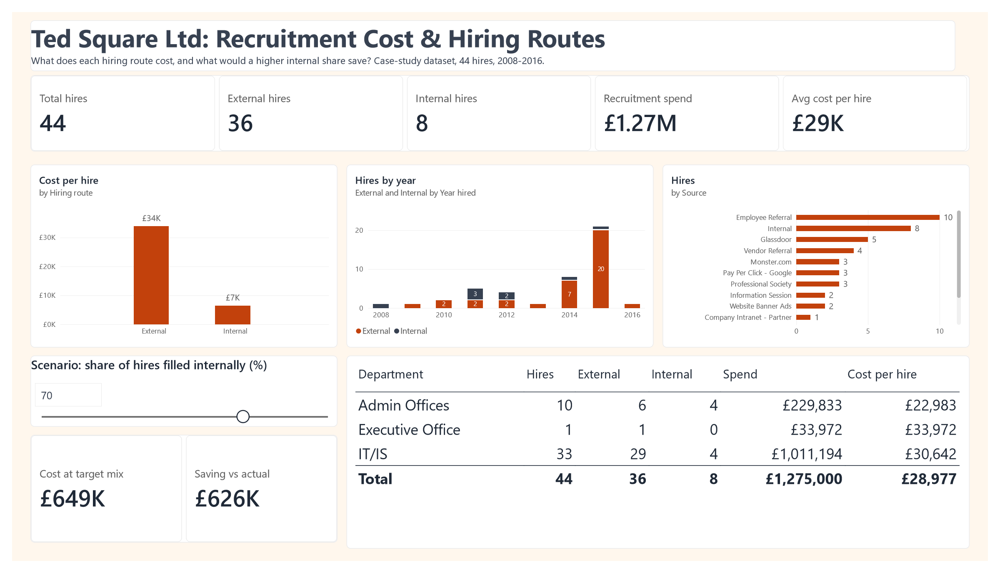

Business context
Ted Square Ltd relied heavily on external recruitment and wanted to know whether that was financially sustainable, and how much a shift towards internal hiring would change spend without lowering the quality of hires.
Data and preparation
Two sheets: a hiring record for 44 employees (department, position, hire date, source channel, hiring route, performance score and cost per hire) and a cost breakdown listing each recruitment cost line by route.
The date problem
The original report showed hire dates as numbers such as 42125. The Date of Hire column mixed two formats: genuine Excel dates, which load as serial numbers, and US-style text such as 10/27/2008. Power BI could not read the column as dates, so any time-based chart was wrong.
Fixing the hire date (Power Query M)
Table.TransformColumns(#"Promoted Headers", {{"Date of Hire", each
if _ is date or _ is datetime or _ is number
then Date.From(_)
else Date.FromText(Text.Trim(Text.From(_)), [Culture="en-US"]),
type date}})Each value is checked: numbers and dates are converted directly, and text is parsed explicitly as a US date so that 10/27/2008 cannot be misread as the 10th day of the 27th month. Names and source channels were also trimmed of stray spaces.
Hire Year column
Hire Year = YEAR(Raw[Date of Hire])A calculated column set to "Don't summarize", so the years sit on a chart axis instead of being added together.
DAX measures explained
Hires, External Hires, Internal Hires
Hires = COUNTROWS(Raw)
External Hires = CALCULATE([Hires], Raw[Employment Method] = "External") + 0
Internal Hires = CALCULATE([Hires], Raw[Employment Method] = "Internal") + 0The route measures reuse [Hires] with a filter, so there is one definition of a hire. Using both as series on one chart splits every year into external and internal.
Recruitment Cost and Avg Cost per Hire
Recruitment Cost = SUM(Raw[Cost per hire])
Avg Cost per Hire = DIVIDE([Recruitment Cost], [Hires])Total spend and its average per hire, formatted in pounds.
Cost per hire by route, fixed
External Cost per Hire =
CALCULATE([Avg Cost per Hire],
REMOVEFILTERS(Raw[Employment Method]),
Raw[Employment Method] = "External")
Internal Cost per Hire =
CALCULATE([Avg Cost per Hire],
REMOVEFILTERS(Raw[Employment Method]),
Raw[Employment Method] = "Internal")REMOVEFILTERS clears any route filter from the page before applying its own, so each measure always returns the cost for its route. The scenario needs both values at once.
The internal hiring scenario
A what-if parameter, Internal Hire Target, sets the share of hires filled internally, from 0% to 100% in steps of 10. The default is 70%, the target proposed in the original Ted Square recommendations.
Scenario Cost and Scenario Saving
Scenario Cost =
VAR t = 'Internal Hire Target'[Internal Hire Target Value] / 100
VAR n = CALCULATE([Hires], REMOVEFILTERS(Raw[Employment Method]))
RETURN n * (t * [Internal Cost per Hire] + (1 - t) * [External Cost per Hire])
Scenario Saving =
CALCULATE([Recruitment Cost], REMOVEFILTERS(Raw[Employment Method]))
- [Scenario Cost]The scenario keeps the same 44 hires and asks what they would have cost at the chosen mix. At 70% internal that is about 31 internal and 13 external hires, costing £649K instead of £1,275K.
What the scenario assumes
- Costs scale with volumeThe model applies an average cost per hire. In reality, much external spend is fixed (agency fees, job boards, adverts), so savings would not fall exactly in line.
- How cost per hire was allocatedThe dataset spreads each route's total cost evenly across its hires, and lists per-employee costs such as checks and travel once rather than per hire. The figures are used as supplied and would need checking against real invoices.
- Internal candidates existA 70% internal share assumes suitable people are ready to move. That depends on succession planning that is not yet in place.
- Backfill is ignoredAn internal move creates a new vacancy, which the model does not count.
Dashboard and findings

| Department | Hires | External | Internal | Spend | Cost per hire |
|---|---|---|---|---|---|
| IT/IS | 33 | 29 | 4 | £1,011,194 | £30,642 |
| Admin Offices | 10 | 6 | 4 | £229,833 | £22,983 |
| Executive Office | 1 | 1 | 0 | £33,972 | £33,972 |
| Total | 44 | 36 | 8 | £1,275,000 | £28,977 |
IT/IS alone accounts for 79% of recruitment spend, almost all of it through external hiring.
- Hiring ran at a few people a year until 2014 (8 hires), then peaked at 21 in 2015, 20 of them external.
- Employee referral was the largest single source, with 10 hires, followed by internal moves (8) and Glassdoor (5).
- Performance ratings were similar across both routes. Internal hires are too few (8) to prove they perform better or worse.
Limitations
- Small sample. 44 hires, only 8 internal, so route comparisons are indicative rather than conclusive.
- No time-to-fill data. The dataset has hire dates but no requisition dates, so speed of hiring cannot be measured.
- Case-study data. Figures describe a fictional company and are not results from an employer.
Recommendations
- Build internal routes into IT/IS roles through succession plans and a skills inventory, since the department drives most of the spend.
- Keep external hiring for skills the business lacks, and review agency use first, as the agency fee is the largest single cost line.
- Grow the referral programme. It is already the top source, and total referral bonuses (£180K) were well below agency fees (£600K).
- Set a phased internal-hiring target, for example 40% then 70%, and track it on the dashboard against actual spend.
- Capture requisition dates and real invoice costs so time-to-fill and true cost per hire can be measured.
How to reproduce it
- Load both sheets and apply the date fix in section 02 to the hiring sheet.
- Add the
Hire Yearcolumn and set it to "Don't summarize". - Create the measures in section 03 and the parameter in section 04: 0 to 100, increment 10, default 70.
- Use External Hires and Internal Hires as two series on the yearly chart.